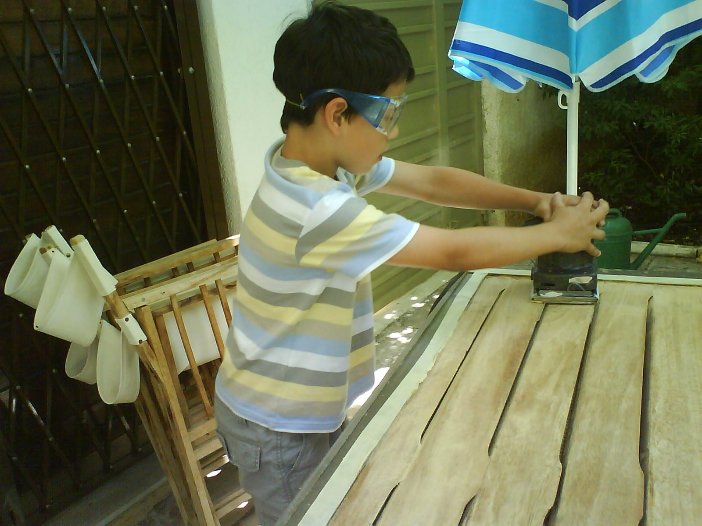
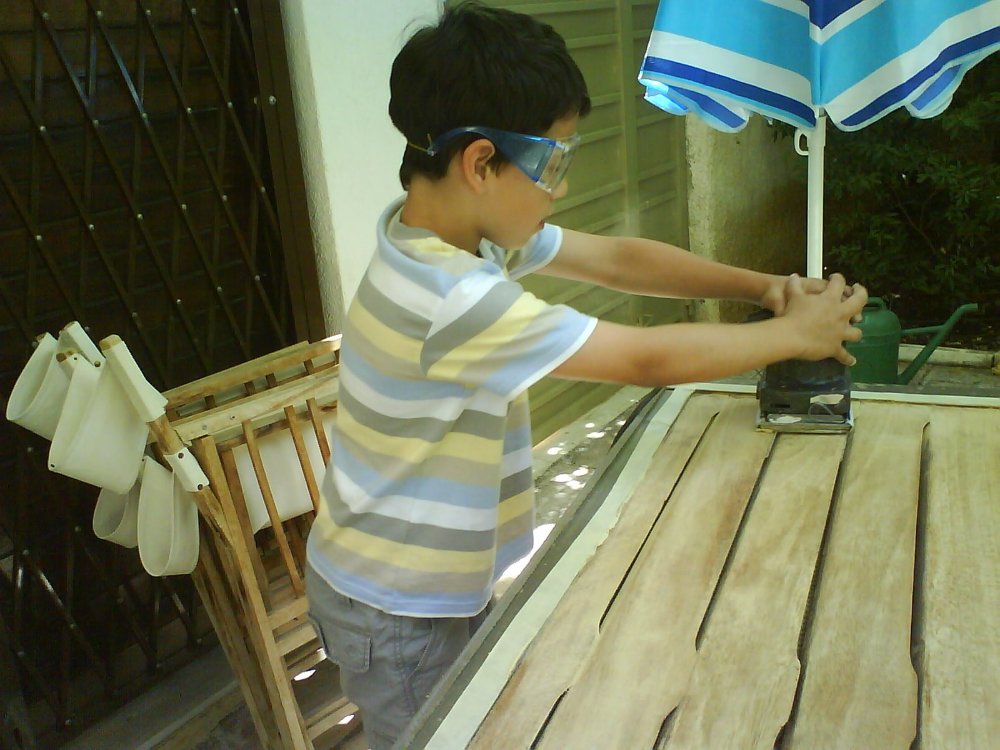

Early Beginnings
I grew up in Athens, Greece, spending much of my childhood attending an international school. This meant I was immersed in different cultures and languages from a young age, all while navigating a rigorous academic environment.
Alongside school, we frequently visited relatives, particularly my grandparents. My grandfather's in-house workshop, which at first glance seemed like a floor-to-ceiling collection of junk, was actually a treasure trove filled with endless opportunities and stories. It was a chaotic paradise where tools, random parts, and miscellaneous hardware were kept “just in case,” teetering on the edge of hoarding.
Every visit meant being roped into fixing or improving something – a broken appliance, a squeaky door, or the garden hose that refused to cooperate. These tasks were laborious and endless, but they were also adventures that taught me the magic of how things work that made refurbishing possible.
My grandfather’s knack for fixing anything and everything rubbed off on me, sparking an early interest in sustainability and the idea of giving objects a second life. A few years later, I inherited his collection of “how things work” books, which served as my unexpected introduction to engineering.
 
